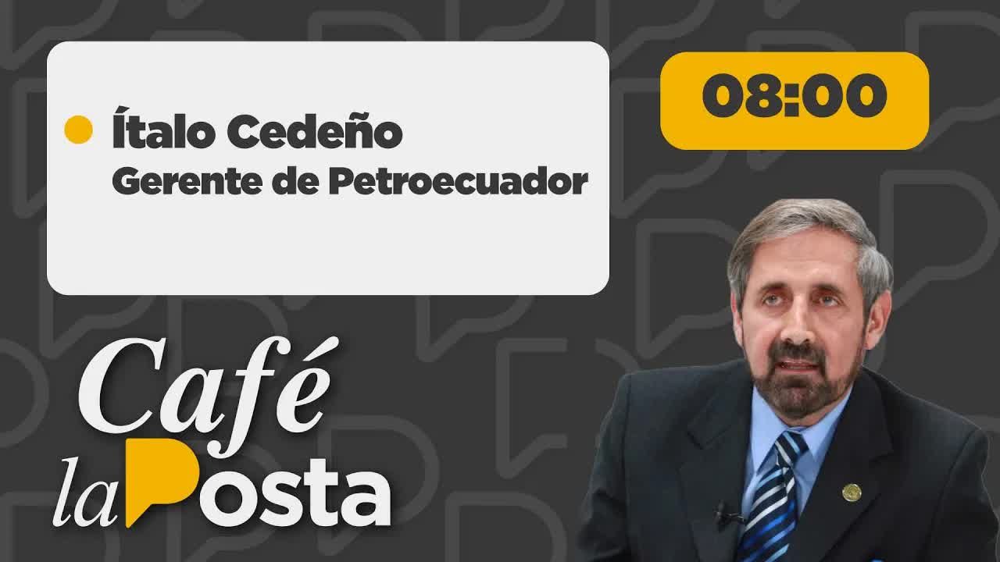
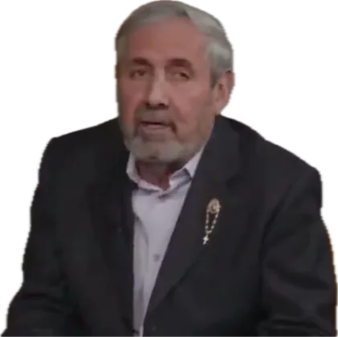
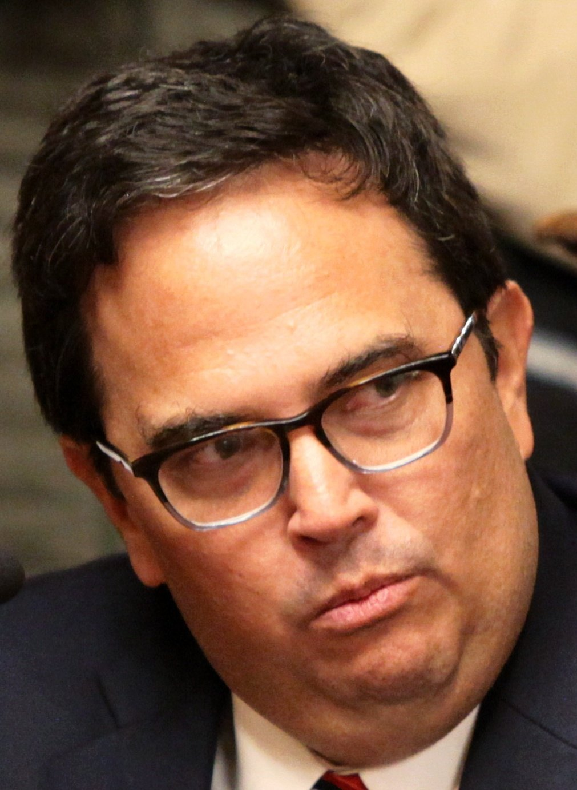
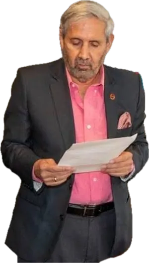
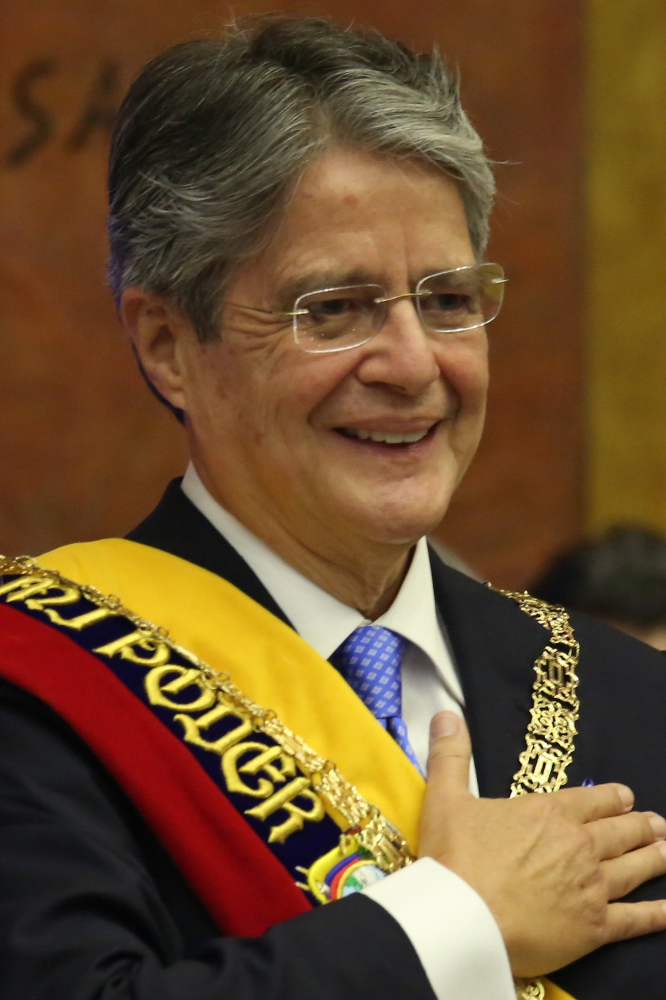
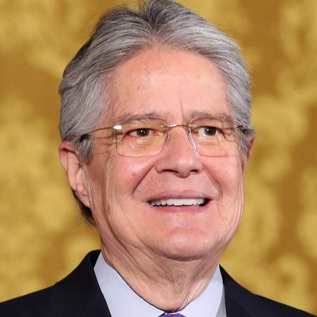
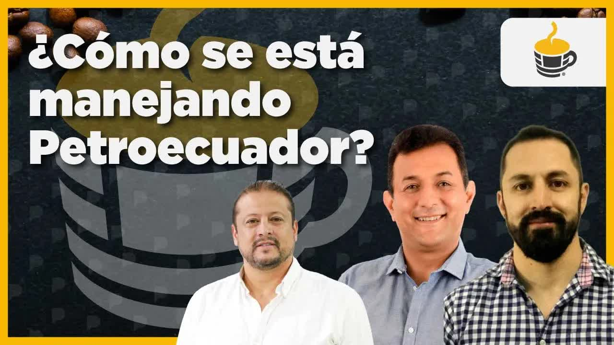

Aug 1, 2022 · The interview with Ítalo Cedeño (first segment)

Still from the interview. Investigation material
Ítalo Cedeño became general manager of Petroecuador on January 1, 2022, appointed by Guillermo Lasso. Seven months later he sat down at Café la Posta to answer questions about his wife: an audio recording in which she recommended job candidates to the head of human resources, an intelligence report that placed her in the manager's office directing hiring, chats with officials and Signal calls to a senior executive who had been fired. On air, Cedeño acknowledged that she had influence over his work during the first month and that he had confessed it to the president at a private meeting at Carondelet. That same night the president asked the board to remove him, and the next day he resigned.

Ítalo Cedeño is a petroleum engineer from Espol, with graduate studies at Harvard and a master's degree from Venezuela, where he lived for five years. He has spent 45 years in the sector, public and private. He had already retired when Iván Correa called him to talk with Guillermo Lasso. He was appointed in December 2021, took office on January 1, 2022, and started work on the 3rd, the first business day. Lasso asked him to bring production to one million barrels a day, the campaign promise. Cedeño replied that doubling hydrocarbon output takes five years, from January 1, 2022, to December 31, 2026, and that he expects the government to end its term at about 900,000 barrels per day.

The first time Boscán heard his name, it was as a candidate backed by Guadalupe Llori, then president of the National Assembly. Cedeño acknowledged a friendship dating back to when she was prefect of Orellana and he was producing oil in the middle of the binational strikes, but said some twenty people could have suggested him and that the associations of petroleum engineers had asked the president to appoint him. When he arrived he built a ring of about twenty people he trusted. El Universo described the circle as made up of industry faces and some controversial figures: Jaime Pinos Manzano as company attorney, Salgado in marketing, Cerón in exploration, Rafael Armendáriz in operational coordination and Pablo Novoa in international trade.
Not a public official. An audio recording, an intelligence report, chats and calls show her recommending, interviewing and deciding on staff
Head of human resources when she received the manager's wife's recommended résumé. Cedeño moved her to the company's legal office
Petroecuador's chief attorney. Former adviser to Patricio Rivera under the Correa government; the most controversial appointment, according to El Universo
Manager of exploration and production. A source identified him entering the bank with the manager's wife; Cedeño says it is not him
Manager of international trade, the post Cedeño calls the country's paycheck
Former president of the National Assembly. Cedeño acknowledges a friendship dating back to when she was prefect; her son-in-law has drilling rig contracts with the company
Boscán asked him about Carla Gonzaga, a lawyer in the legal department. Rumors said she was his relative or that his wife had placed her there. Cedeño denied any family tie and said she is not part of his inner circle. But he admitted that she had been head of human resources and that he moved her to another post: Caesar's wife must not only be honest but also appear to be. The reason for that move was in an audio recording.
His résumé: 45 years in the sector, retired and called by Iván Correa to talk with Lasso.
Friendship with Guadalupe Llori since she was prefect of Orellana
AcknowledgesThat she pushed him into the post
DeniesThe manager's wife recommends an official who worked with the president of the National Assembly.
His wife's influence during the first month
AcknowledgesThat she appoints or fires anyone: I'm the one who decides
DeniesThe spouse, who holds no public post, frequently appears in the office directing hiring.
That the report exists
ArguesThat she directed hiring
DeniesMessages about interviews and job changes, and calls to a senior official through February.
The chats are his wife's
AcknowledgesThat he ordered those changes
DeniesThe wife walks in with a company executive and leaves through the back with an envelope.
That his wife appears in the video
AcknowledgesKnowing what was in the envelope
ArguesLasso, Iván Correa, Minister Vera, Roberto Salas and Cedeño. The government classified it as confidential.
That he told the president after the meal
AcknowledgesThat the meeting was about his wife
DeniesThree drilling rig contracts held by Guadalupe Llori's son-in-law during his administration.
That the contracts exist
AcknowledgesHaving handled them: exploration and production deals with that
DeniesThe government's code of ethics punishes what is immoral, not only what is illegal, and that is grounds for dismissal.
Facing the questions the same day, without a single document
AcknowledgesThe manager admitted his wife's influence and the private meeting.
Lasso asked Petroecuador's board to remove the manager that same night.
Cedeño submitted his irrevocable resignation, seven months after taking office.
La Posta played an audio recording of Marta Morla, the manager's wife, talking with Carla Gonzaga, then head of human resources. She tells her about a young man who worked for the past three years with the president of the National Assembly and who resigned out of loyalty when she stepped down: I have a résumé, I don't know if you'd like to meet the gentleman and see what you think. The two women call themselves Charlie's Angels. Cedeño recognized the voices. Boscán summed up the problem: someone who does not work for Petroecuador was recommending résumés for Petroecuador, and that someone is the manager's wife.
At the beginning, the first month, only that month, my wife had influence, just as I imagine your wife also has influence over you, giving advice. I told her: Caesar's wife must not only be honest but also appear to be. Don't get involved, because you're hurting me. She never did it again. That's what I told the president.
Ítalo Cedeño, general manager of Petroecuador, on Café la Posta, August 1, 2022
Next came an intelligence report from his first months in office, with private data redacted. The relevant section says that a human source revealed that Ítalo Cedeño's spouse, although not an employee of Petroecuador EP, is frequently seen in her husband's office, where she directs and handles the hiring of staff as well as contracting processes with outside suppliers of goods and services. Boscán offered him the full document so he could take it up with the National Police or the Strategic Intelligence Center.
Then the chats. In one, the wife writes to an official: Martita, what was done with Mónica seems very important to me; we have to keep replacing the entire top brass, it's urgent and very necessary, otherwise they will immediately become our fierce detractors and they will finish us off. In another: at 12:15 I can interview one and at 12:30 another; it doesn't matter if Carla interviews them first; I won't decide until after I've interviewed them. And the phone log of a senior official who was fired: calls from the wife over Signal, the channel that leaves no record when the Attorney General's Office (Fiscalía) investigates, on January 31 and February 10 and 15, 2022. It wasn't just the first month.

Cedeño answered everything with the same argument: I'm the one who decides. He said that in January his wife wanted to help him choose honest people and get rid of corrupt ones; that Petroecuador officials have been her friends for thirty or forty years; that if anyone has something against her they should go to the Attorney General's Office and sign a complaint; and that all the audio recordings came from a woman who felt wronged because he threw out the whole mafia she had at Petroecuador, who recorded him and tried to extort him. I'd rather die than be extorted, he said. He said he had filed a complaint with the Attorney General's Office so that everything would be investigated. Boscán reminded him of Article 6 of Decree 4 and showed him that the communications continued into February.
Boscán showed a video from June 15, 2022: the manager's wife walks into the Banco Pichincha branch on González Suárez with a man a source identified as Cerón, the manager of exploration and production, and leaves through the back with an envelope. Cedeño said it is not Cerón, that Cerón has a beard and is taller, that his wife has a real estate business and that nobody conducts illicit business in a bank. The question remained: what was the manager's wife doing going in and out of a bank branch with a company executive?
Then the private meeting of July 8, 2022, at Carondelet: President Lasso, Iván Correa, Minister Xavier Vera, Roberto Salas and Cedeño. The government classified it as confidential. Cedeño described it as a briefing on projects and said that after the meal they talked about the gossip on social media. There, swearing to God, he said he told the president the same thing he said on air: that in the first month his wife had influence over him, advising him on honest officials, and that he asked her to stop interfering. According to the account of others present that reached La Posta, the conversation was tense, and it covered several months and a demand that he stop doing bad things. Cedeño denied it.

Not knowing is one thing, Mr. President, and not wanting to know is another. Of course you won't find out if you don't investigate. Of course you won't find out if you don't allow the investigations.
Andersson Boscán, closing remarks on Café la Posta, August 1, 2022
There were more questions. Cristian Lozada, Guadalupe Llori's son-in-law, holds three drilling rig contracts with Petroecuador under Cedeño's administration; Cedeño said exploration and production handles that and that he needs every drilling rig in the country to reach the target. A multimillion-dollar payment order to the Orellana family for expropriated properties in Esmeraldas; Cedeño said he paid on a judge's order, under an agreement with the Office of the Solicitor General and without interest, to avoid going to jail. His assets: his 2022 sworn declaration lists seven accounts, five in Ecuador and two in the United States, and a net worth of 1.2 million dollars; he said he has no accounts in tax havens and pays about 60,000 dollars in taxes a year. His children live in the United States and, according to him, none of them works for an oil services company.
Cedeño thanked Boscán for the interview and said that someone with something to hide doesn't go near the fire: he wanted to respond right away, without a single document, because his conduct is honest. Boscán credited him for facing the questions. But he closed the show with the fact that mattered: President Lasso set the bar high with a code of ethics that punishes not only what is illegal but what is immoral, and that is grounds for dismissal. Since the July 8 meeting, the president already knew about the direct influence of the manager's wife over hiring and appointments that belong to the manager, not to his family circle.

The answer came that same night. President Lasso asked Petroecuador's board to remove the general manager, and on August 2, 2022, Cedeño got ahead of it and submitted his irrevocable resignation, seven months after taking office with the goal of doubling production. The interview cost him his job. On June 28, 2023, in the same studio, oil workers' union leader David Almeida spoke about the company's corruption scandals and, without naming him, referred to the general manager who fell from that chair and who, he said, had persecuted him for telling the truth. By then Petroecuador had a lawyer as energy minister, Fernando Santos Alvite, and a union fight over the company's workers' committee.

The case left a question about power in state-owned companies: who decides when the man who signs admits that his wife interviewed, recommended and decided? And another about the president who classified as confidential the meeting where he found out.
Updated September 5, 2026
Lasso names Cedeño general manager of Petroecuador.
Cedeño takes office with the goal of doubling production in five years.
The audio: the wife recommends a résumé to the head of human resources.
Calls from the wife to a senior official who was later fired.
Video of the wife entering a Pichincha branch with an executive.
Private meeting: Lasso, Correa, Vera, Salas and Cedeño.
Cedeño acknowledges his wife's influence on air.
After the interview, Lasso asked the board to remove the manager.
Cedeño resigned irrevocably.
An oil union leader alludes to the manager who fell from that chair.
General manager of Petroecuador since January 1, 2022. Acknowledged his wife's influence during the first month.
The manager's wife. Holds no public post. An audio recording, an intelligence report, chats and calls link her to hiring.
Head of human resources who received the résumé. Moved to the company's legal office.
Manager of exploration and production. A source identifies him in the bank video.
Former president of the National Assembly. A friend of Cedeño's; her son-in-law Cristian Lozada holds three drilling rig contracts.

President. Appointed Cedeño and was informed at the private meeting on July 8, 2022.
Energy minister. Present at the Carondelet meeting.
Photos via Wikimedia Commons. Guillermo Lasso: Presidency of the Republic of Ecuador (Public domain).
He acknowledged that in the first month his wife had influence, advising him on honest people, and that he asked her to stop getting involved; he maintained that only he appoints and fires; he attributed the audio recordings to a woman who recorded him to extort him after her people were removed; he said he had filed a complaint with the Attorney General's Office; he denied that the man in the bank video is Cerón; he denied having accounts in tax havens.
He swore that he told the president exactly what he said on air: one month, not several, and never that his wife did anything wrong. The president, he said, understood.
Classified the July 8, 2022, meeting as confidential. No public response appears in the show.

something in government work Stay tuned to café la posta all week because starting this week we begin talking about corruption in the national government today corruption petroecuador question mark so that normally in the lawsuit That's the trap not all the questions Exactly corruption Petro Ecuador serious very serious allegations involve the president the board Ecuador the gentleman right now the cedeños…
Read the full transcriptyou can also watch it on la posta's social media But there's much more going on soon the elections for the union leadership of petroecuador's workers' committee will even be held and this has allowed several anomalies and irregularities in the entity to come to light to be uncovered we will be reviewing that and we will also be able to talk about legal actions filed that the current …
Read the full transcriptTranscripts from each show's automatic captions. They have not been corrected by hand: use them to find a phrase and jump to the exact minute in the video, not as verbatim quotes.
The manager admitted his wife's influence and the private meeting.
Lasso asked Petroecuador's board to remove the manager that same night.
Cedeño submitted his irrevocable resignation, seven months after taking office.
The audio recordings, chats, intelligence report and bank video were shown by La Posta on August 1, 2022; Cedeño responded to each one in the same interview. His departure from the post is recorded in the press over the following days: Lasso asked the board to remove him on the night of August 1 and Cedeño resigned on August 2 (Primicias, Ecuavisa, El Universo, GK). The names of the manager's wife and of the former head of human resources are spelled as they were pronounced on air; the press spelled the wife's name as Martha Morlas. The videos are the original shows, hosted on this site.